- 01工程判断
- 02Skill 协议
- 03调用与验证
- 04经验反馈
系列背景：本文是《AI 编程最佳实践》第八篇。第七篇横向比较了多个 Agent 框架如何处理意图理解与需求拆分，本篇转向一个更轻量的工程框架：mattpocock/skills。它不试图接管整个研发流程，而是把工程师每天依赖的判断力拆成一组小型、可组合、可安装的 skill。分析基于
README.md、.claude-plugin/plugin.json、CLAUDE.md、CONTEXT.md与各SKILL.md原文，资料读取于 2026-04-29。
一、它到底是什么
mattpocock/skills 的 README 开头把定位说得很直接：
My agent skills that I use every day to do real engineering - not vibe coding.
这句话可以拆成三层含义。
第一，项目的对象不是某个单一 IDE，也不是某个全流程研发平台，而是 agent skills：一组可被 Claude Code、Codex、Cursor 等 Agent 读取的行为协议。每个 skill 通过 SKILL.md 描述触发条件、执行步骤、检查清单与附属资料。
第二，它强调的是 real engineering。这里的工程不是“生成代码”，而是需求澄清、Issue 流转、测试反馈、故障复现、架构治理、危险操作拦截这些真实软件开发中会决定质量的工作。
第三，它明确反对 vibe coding。README 把 GSD、BMAD、Spec-Kit 这类方案归为试图“owning the process”的框架，而 mattpocock/skills 选择另一条路线：skill 要小、易改、可组合，并且把控制权留给工程师。
这个项目因此更像一个 AI 工程微内核。它不提供统一大流程，而是提供一组可插拔的系统调用：
| 层级 | 代表 skill | 解决的问题 |
|---|---|---|
| 仓库初始化 | setup-matt-pocock-skills |
告诉 Agent 本仓库的 Issue tracker、triage label、领域文档在哪里 |
| 意图对齐 | grill-me、grill-with-docs、to-prd |
在执行前把模糊需求转成共享理解 |
| 工作拆分 | to-issues、triage |
把计划拆成可领取、可追踪、可交给 Agent 的垂直切片 |
| 反馈闭环 | tdd、diagnose |
用测试、复现、假设、插桩给 Agent 提供可验证信号 |
| 架构治理 | improve-codebase-architecture、zoom-out |
防止代码库在 Agent 加速下变成难以修改的泥球 |
| 表达与自举 | caveman、write-a-skill |
压缩沟通成本，并让团队继续扩展自己的 skill |
| 工具护栏 | git-guardrails-claude-code、setup-pre-commit 等 |
把危险操作和质量检查下沉到工具层 |
项目的 .claude-plugin/plugin.json 也印证了这个边界。插件只注册了 9 个 engineering skills 和 3 个 productivity skills：
{
"name": "mattpocock-skills",
"skills": [
"./skills/engineering/diagnose",
"./skills/engineering/grill-with-docs",
"./skills/engineering/triage",
"./skills/engineering/improve-codebase-architecture",
"./skills/engineering/setup-matt-pocock-skills",
"./skills/engineering/tdd",
"./skills/engineering/to-issues",
"./skills/engineering/to-prd",
"./skills/engineering/zoom-out",
"./skills/productivity/caveman",
"./skills/productivity/grill-me",
"./skills/productivity/write-a-skill"
]
}
misc 目录的四个 skill 在 README 中被标为“rarely used”，但没有进入插件默认清单。这是一个重要设计信号：框架把日常工作路径和偶发工具脚本分开，避免默认上下文被过多能力污染。
二、源码结构：Skill 不是提示词，而是行为协议
CLAUDE.md 给出了仓库组织规则：
engineering/：日常代码工作productivity/：日常非代码工作流misc/：保留但不常用的工具personal/：作者个人环境相关，不对外推广deprecated/：废弃能力
同时它要求 engineering/、productivity/、misc/ 中的每个 skill 都必须在顶层 README 中出现，且 README 中的 skill 名称必须链接到对应 SKILL.md。这个约束让仓库有两个入口：README 面向人类，SKILL.md 面向 Agent。
write-a-skill/SKILL.md 进一步定义了一个标准 skill 的形状：
skill-name/
├── SKILL.md
├── REFERENCE.md
├── EXAMPLES.md
└── scripts/
└── helper.js
SKILL.md 的 frontmatter 是触发器：
---
name: skill-name
description: Brief description of capability. Use when [specific triggers].
---
这里最关键的是 description。原文明确指出：description 是 Agent 决定是否加载该 skill 时能看到的唯一信息。因此它必须说明两件事：
- 这个 skill 提供什么能力。
- 什么时候应该触发它。
这解释了为什么 mattpocock/skills 的每个 skill 都很像一个精简的操作规程，而不是一段泛泛的提示词。提示词通常描述“你应该怎样思考”；skill 描述“当场景 X 出现时，按步骤 A、B、C 执行，并在必要时读取这些附属文件”。
有些 skill 还带有 disable-model-invocation: true，例如 grill-with-docs、setup-matt-pocock-skills、zoom-out。这类 skill 的含义是：不要再启动额外模型调用，而是直接把当前 Agent 的行为切换到某个规程。它们更像模式切换器，不是外包任务的入口。
三、README 的四个失败模式
README 的核心不是 skill 列表，而是四个失败模式。它们构成了整个框架的设计坐标系。
3.1 Agent 没有理解需求
README 把第一个问题命名为：
The Agent Didn't Do What I Want
传统开发中，人类工程师也会误解需求；AI Agent 的问题是误解成本更低、执行速度更快。输入越模糊，模型越容易“合理化”：沿着表面语义生成一个看似合理但偏离真实意图的实现。
框架给出的答案是 grill-me 和 grill-with-docs。它们强制 Agent 在执行前进行持续追问，直到设计树上的关键分支被逐一解析。
3.2 Agent 太啰嗦
第二个问题表面上是表达问题，本质上是领域语言问题。README 引用 DDD 的 ubiquitous language，指出 Agent 被丢进代码库后往往不知道团队内部词汇，只能用很多普通话描述一个项目内已有精确名称的概念。
grill-with-docs 的答案不是要求 Agent “少说点”，而是维护 CONTEXT.md。当一个术语被澄清，Agent 要立即把它写入领域词汇表；当一个术语与已有定义冲突，Agent 要当场指出。
这种设计把“少废话”转化为“拥有共享语言”。语言压缩不是风格优化，而是知识建模。
3.3 代码不能工作
第三个问题是反馈环缺失。README 的判断很硬：
Without feedback on how the code it produces actually runs, the agent will be flying blind.
Agent 不怕写代码，怕的是没有可运行、可重复、可判定的反馈信号。tdd 和 diagnose 分别处理两个场景：
- 新功能或修 bug 时，用 red-green-refactor 与垂直切片建立测试反馈。
- 遇到复杂 bug 或性能回退时，先构造反馈环，再复现、假设、插桩、修复、回归。
这两个 skill 的共同点是：先把“感觉”变成“信号”。
3.4 代码库变成泥球
第四个问题是 Agent 加速带来的架构熵增。README 直接说：Agent 能极大加快编码，也会以前所未有的速度加速软件熵增。
improve-codebase-architecture 和 zoom-out 的职责就是抵消这种趋势。前者寻找 deepening opportunities，把浅模块重构成深模块；后者要求 Agent 升高抽象层级，解释某段代码在整体系统中的位置。
这里的设计立场非常明确：AI 编程不是只要更快地产生代码，还要更系统地保护代码库的长期可修改性。
四、完整工作闭环
mattpocock/skills 的能力不是线性的，而是一个围绕“共享理解”和“反馈信号”旋转的闭环。

查看图解源文本
flowchart TD
userIntent["模糊需求"] --> alignSkills["对齐层: grill-me / grill-with-docs"]
alignSkills --> prdSkills["需求文档: to-prd"]
prdSkills --> issueSkills["任务切片: to-issues / triage"]
issueSkills --> feedbackSkills["执行反馈: tdd / diagnose"]
feedbackSkills --> architectureSkills["架构治理: improve-codebase-architecture / zoom-out"]
architectureSkills --> domainDocs["团队记忆: CONTEXT.md / ADR / docs/agents"]
domainDocs --> alignSkills
这个闭环有三个关键状态文件。
第一类是 docs/agents/*。setup-matt-pocock-skills 会为仓库配置 Issue tracker、triage label 和 domain docs。它让 Agent 知道“工作在哪里流转”。
第二类是 CONTEXT.md 或 CONTEXT-MAP.md。它们定义项目领域语言，让后续 PRD、Issue、测试命名、架构建议使用同一套术语。
第三类是 docs/adr/。它记录那些难以逆转、没有上下文会显得奇怪、且确实来自真实权衡的架构决策。
这三类文件让 skill 不只是当次会话的临时提示，而能把一次交互沉淀成下一次交互的上下文。
五、核心 Skill 的设计思想
5.1 setup-matt-pocock-skills：先配置协作地形
setup-matt-pocock-skills 是工程类 skill 的入口。它不直接写业务代码，而是让仓库具备被其他 skill 正确理解的上下文。
源码要求它探索这些位置：
git remote -v与.git/config，判断 Issue tracker 倾向于 GitHub、GitLab 还是本地 markdown。AGENTS.md、CLAUDE.md，判断是否已有## Agent skills区块。CONTEXT.md、CONTEXT-MAP.md、docs/adr/，判断领域语言与架构决策文档布局。docs/agents/，判断此前是否已经配置过。
它随后让用户逐项确认三件事：Issue tracker、triage label vocabulary、domain docs。
这个 skill 的深层价值是把“本仓库如何协作”显式化。没有这一步，to-prd 不知道 PRD 要发到哪里，triage 不知道应该使用哪些标签，tdd 与 diagnose 不知道该读哪份领域语言。
5.2 grill-me 与 grill-with-docs：把需求澄清变成门控
grill-me 极短，核心指令只有几句话：持续访谈用户，沿设计树逐个分支追问，每次只问一个问题；如果问题能通过探索代码库回答，就不要问用户，直接探索。
grill-with-docs 在此基础上加入了领域文档和 ADR。
它要求 Agent 在会话中执行四类动作：
- 当用户用词与
CONTEXT.md冲突时，立即指出冲突。 - 当用户使用模糊或重载术语时，提出精确 canonical term。
- 用具体场景压力测试领域关系。
- 当用户描述与代码实际行为矛盾时，明确指出。
更关键的是，它要求当术语被解析时立即更新 CONTEXT.md，不要批处理。ADR 也不是随手写，只有同时满足三个条件才建议创建：难以逆转、没有上下文会让未来读者困惑、确实来自真实取舍。
这套设计把“问清楚”从交流技巧提升为工程门控。需求澄清不再是会议纪要，而是领域模型与架构记录的增量更新。
5.3 to-prd 与 to-issues：从需求到可领取工作
to-prd 的一句关键约束是：
Do NOT interview the user — just synthesize what you already know.
这意味着它不是需求澄清工具，而是上下文沉淀工具。它假设前面的对齐已经完成，接下来要把现有会话和代码库理解综合成 PRD，并发布到项目 Issue tracker。
它要求 PRD 包含问题陈述、解决方案、用户故事、实现决策、测试决策、非目标与补充说明。特别值得注意的是，它明确要求不要在实现决策里写具体文件路径或代码片段，因为这些内容很快过期。PRD 应该记录相对稳定的模块、接口、契约与架构决策。
to-issues 则把 PRD 或计划拆成 independently-grabbable issues。它反对按层横切，例如“先做数据库、再做 API、最后做 UI”。它要求每个 issue 都是 tracer bullet：从 schema、API、UI 到测试的一条很窄但完整的垂直路径。
这对 Agent 协作很重要。一个水平切片完成后往往不可演示，也难以验证业务价值；一个垂直切片完成后，即使范围小，也能独立运行、独立验收、独立交给 Agent。
5.4 triage：把 Issue 流转设计成状态机
triage 把 Issue 管理压缩成两个 category roles 与五个 state roles。
两个类别：
bugenhancement
五个状态：
needs-triageneeds-infoready-for-agentready-for-humanwontfix
每个 Issue 应该同时携带一个类别角色和一个状态角色。如果状态冲突，Agent 必须先提示维护者。
这个设计的核心不是标签本身，而是 AFK-ready 的概念。ready-for-agent 表示该 Issue 已经完全规格化，Agent 可以在没有额外人类上下文的情况下领取。为了达到这个状态，bug 需要先尝试复现，需求需要必要时进入 grill-with-docs，最终要写出 agent brief。
换句话说，triage 把“能不能交给 AI 做”从主观判断转成 Issue 状态机中的一个显式状态。
5.5 tdd：测试行为，不测试实现
tdd 的核心原则是：
Tests should verify behavior through public interfaces, not implementation details.
它反对一次性写完所有测试再写所有实现，因为那会把 RED 阶段误解为“写一堆想象中的测试”。正确方式是 vertical slices via tracer bullets：
RED -> GREEN: test1 -> impl1
RED -> GREEN: test2 -> impl2
RED -> GREEN: test3 -> impl3
每一轮只写一个验证一个行为的测试，再写刚好让这个测试通过的实现。所有测试通过后再重构，且永远不在 RED 状态下重构。
这对 Agent 特别关键。Agent 很容易提前抽象、提前补齐未来功能、提前生成看似完整的测试矩阵。tdd 用“一次一个行为”的规则压住这种过度生成冲动。
5.6 diagnose：调试的第一性原理是反馈环
diagnose 的第一阶段不是读代码，也不是猜原因，而是建立反馈环。原文说：
This is the skill. Everything else is mechanical.
它列出了 10 种构造反馈环的方法：失败测试、curl 脚本、CLI fixture、headless browser、trace replay、throwaway harness、property/fuzz loop、bisect harness、differential loop、HITL bash script。
这个列表的价值在于给 Agent 一个明确优先级：先找到可重复、可运行、可判定的信号，再进入复现、假设、插桩、修复、回归测试。
diagnose 还要求先提出 3-5 个可证伪假设。每个假设必须说明预测：如果它是原因，那么某个操作会让 bug 消失或变严重。不能提出预测的假设就是 vibe，应当丢弃或重新表述。
这套规程把调试从“读代码找灵感”改造成“构造实验验证假设”。
5.7 improve-codebase-architecture：用深模块抵抗熵增
improve-codebase-architecture 的目标是寻找 deepening opportunities，也就是把浅模块变成深模块的机会。
它先定义一套架构词汇：
- Module：任何拥有 interface 与 implementation 的东西。
- Interface：调用者正确使用模块需要知道的一切，不只是类型签名。
- Depth：接口上的杠杆率；小接口背后承载大量行为就是深模块。
- Seam：可以不在原处编辑就改变行为的位置。
- Adapter：满足某个 seam 上 interface 的具体实现。
- Leverage：调用者从深度中获得的能力。
- Locality：维护者从深度中获得的集中性。
它还给出 deletion test：想象删除某个模块。如果复杂度消失，它只是传递层；如果复杂度重新分散到多个调用者，它就在发挥价值。
这套词汇对 Agent 架构建议很重要。没有共享词汇，Agent 很容易泛泛建议“提取 service”“增加抽象层”“解耦组件”。有了 LANGUAGE.md，它必须围绕 module、interface、depth、seam、adapter、leverage、locality 来陈述问题和收益。
5.8 zoom-out：当局部看不懂时升高抽象层
zoom-out 很短，但作用很实用。它要求 Agent 不熟悉某段代码时，不要继续钻局部细节，而是上升一层，给出相关模块与调用者地图，并使用项目领域词汇。
这对应一个常见失败模式：Agent 在局部文件里做“就地修补”，但没有理解该文件在系统中的角色。zoom-out 提供了一个低成本刹车。
5.9 caveman：压缩表达，而不是压缩语义
caveman 是一个持久化的极简表达模式。它要求删除冠词、寒暄、填充词和弱化表达，保留所有技术信息。原文声称可以减少约 75% token。
它不是装腔作势的风格技巧，而是对 Agent 沟通成本的控制。工程组织一旦把领域语言沉淀到 CONTEXT.md，再叠加 caveman 这类表达压缩，Agent 会话就能更接近“高密度工程日志”，而不是“礼貌但冗长的解释”。
5.10 write-a-skill：框架的自举能力
write-a-skill 让团队可以继续创建自己的 skill。它要求先收集任务领域、用例、是否需要脚本、是否需要参考资料，然后创建 SKILL.md、可选参考文件和可选脚本。
它还定义了 progressive disclosure 的原则：SKILL.md 应保持短小，超过 100 行或存在多个独立领域时，应拆出 REFERENCE.md、EXAMPLES.md 或脚本。
这让 mattpocock/skills 不只是作者的 skill 集合，而是一种可复制的 skill 写法。
5.11 misc 目录：偶发但具体的工具化能力
misc 中的 skill 没有进入插件默认清单，但它们展示了另一类设计：当操作具有确定性、重复性、风险边界清晰时，可以把它封装成专用工具 skill。
git-guardrails-claude-code：设置 Claude Code hook，拦截git push、git reset --hard、git clean -f、git branch -D等危险命令。setup-pre-commit：安装 Husky、lint-staged、Prettier，并把 typecheck/test 放进 pre-commit。migrate-to-shoehorn：把测试中的 TypeScriptas断言迁移到@total-typescript/shoehorn。scaffold-exercises：按课程目录规则生成 exercise 结构，并运行 lint。
这些 skill 的共同特征是任务边界窄、执行步骤明确，适合作为“工具按钮”，不适合作为 Agent 的常驻思维模式。
六、如何在团队中落地
对技术负责人而言，采用 mattpocock/skills 的最短路径不是“一次装完所有 skill”，而是按反馈环逐步接入。
第一步，安装并运行 setup：
npx skills@latest add mattpocock/skills
然后选择需要安装到哪些 coding agents，并运行 /setup-matt-pocock-skills。它会确认 Issue tracker、triage labels 和 domain docs。
第二步，建立领域语言。先不追求完整，只要让 grill-with-docs 在关键需求讨论中逐步写入 CONTEXT.md。一个稳定术语胜过十段临时解释。
第三步，把需求流转显式化。用 to-prd 将已澄清的上下文沉淀为 PRD，用 to-issues 拆成垂直切片，再用 triage 标记哪些 issue 已经 ready-for-agent。
第四步，把执行质量绑定到反馈。新功能优先使用 tdd，复杂 bug 使用 diagnose。没有反馈环的任务不要轻易交给 Agent 独立执行。
第五步，周期性做架构检查。每隔一段时间运行 improve-codebase-architecture，寻找 shallow module、错误 seam 和难测试区域。Agent 加速越明显，架构治理越不能滞后。
这条路径的目标不是让 AI 接管团队，而是让团队把已有工程纪律编码到 AI 可以遵循的工作协议里。
七、工程取舍
mattpocock/skills 的优势很清晰。
它足够轻。每个 skill 都围绕一个具体失败模式，不要求团队迁移到全新研发平台。
它足够可组合。需求澄清、PRD、Issue、TDD、诊断、架构治理之间没有强耦合，团队可以按痛点逐步接入。
它尊重工程师控制权。README 明确反对让框架 own the process；skill 提供的是可调用规程，而不是不可解释的自动化黑箱。
但它也有代价。
第一，它假设团队已有基本工程纪律。没有 Issue tracker、测试文化、领域语言意识的团队，单独安装 skill 不会自动变好。
第二，它依赖文档长期维护。CONTEXT.md、docs/agents/*、ADR 一旦过期，Agent 会把过期知识放大为错误决策。
第三，它的强度来自人类持续确认。grill-with-docs、to-issues、triage 都要求在关键节点向用户确认。它不是 AFK 自动流水线，而是 HITL 工程放大器。
第四，它不是企业治理平台。权限、安全审计、跨仓库标准、组织级质量指标仍需要外部系统承接。git-guardrails-claude-code 能拦截危险命令，但不能替代完整的 DevSecOps 体系。
八、结论：Skills 是工程判断的封装格式
mattpocock/skills 最值得学习的地方，不是某一个 skill 的具体措辞，而是它对 AI 编程问题的重新定义。
它认为 Agent 的主要风险不是不会写代码，而是：
- 在意图不清时过早执行
- 在没有共享语言时冗长解释
- 在没有反馈环时盲目修改
- 在没有架构治理时加速熵增
对应的解决方式也不是“写一个更强提示词”，而是把工程师原本依赖经验完成的动作固化为 skill：追问、澄清、记录、拆分、复现、测试、诊断、重构、拦截。
因此，mattpocock/skills 可以被理解为一种面向 Agent 的工程协议格式。它把团队的方法论切成小块，让模型在正确场景加载正确规程；同时又保留工程师对流程、边界和取舍的最终控制权。
这也是它与大型 AI 工程框架最大的差异：它不把研发变成一条不可见的自动化流水线，而是把每个关键工程动作显式化、文件化、可审查化。对技术负责人来说，这种设计更容易进入真实团队，因为它不是替代工程纪律，而是把工程纪律变成 Agent 能执行的接口。
附录：核心 Skill 原文中文译文
以下译文按执行语义整理，保留原 skill 的触发条件、关键规则和流程结构。为避免正文被长篇说明淹没，附录承担“中文使用手册”的作用。
A. Engineering Skills
A.1 setup-matt-pocock-skills
用途：在 AGENTS.md 或 CLAUDE.md 中设置 ## Agent skills 区块，并创建 docs/agents/ 文档，使其他工程类 skill 知道本仓库的 Issue tracker、triage label 词汇和领域文档布局。
触发条件：首次使用 to-issues、to-prd、triage、diagnose、tdd、improve-codebase-architecture、zoom-out 前，或这些 skill 缺少仓库上下文时。
流程译文：
- 探索仓库，不做假设。读取 git remote、
AGENTS.md、CLAUDE.md、CONTEXT.md、CONTEXT-MAP.md、docs/adr/、docs/agents/与.scratch/。 - 向用户逐项确认三类决策：Issue tracker、triage label vocabulary、domain docs。
- 展示将要写入的
## Agent skills区块和三个文档草稿，让用户修改后再写入。 - 如果
CLAUDE.md已存在就编辑它；否则编辑AGENTS.md；两者都不存在时询问用户创建哪一个。不得重复追加已有区块。 - 写入
docs/agents/issue-tracker.md、docs/agents/triage-labels.md、docs/agents/domain.md。
设计思想：先让 Agent 理解仓库协作地形，再让它执行 PRD、Issue、triage、测试与架构工作。
A.2 grill-with-docs
用途：针对用户计划进行持续追问，同时挑战计划是否符合现有领域模型，并在决策明确时更新 CONTEXT.md 和 ADR。
触发条件：用户希望压力测试计划，或希望把设计与项目语言、已有决策对齐。
流程译文：
持续访谈用户，直到双方达成共享理解。沿设计树逐个分支推进，逐项解析决策之间的依赖。每次只问一个问题，并为每个问题给出推荐答案。如果问题可以通过代码库探索回答，就直接探索代码库。
探索时还要寻找现有文档：单上下文仓库通常有根目录 CONTEXT.md 与 docs/adr/；多上下文仓库通过 CONTEXT-MAP.md 指向各上下文。
会话中必须执行：
- 当用户用词与
CONTEXT.md冲突时，立即指出并要求澄清。 - 当用户使用模糊词时，提出精确标准术语。
- 用具体场景压力测试领域关系和边界。
- 当用户描述与代码不一致时，指出矛盾。
- 当术语被解析，立即更新
CONTEXT.md，不要集中到最后。 - 只有当决策难以逆转、没有上下文会显得奇怪、且来自真实取舍时，才建议创建 ADR。
设计思想：让需求澄清直接沉淀为团队语言和架构记忆。
A.3 to-prd
用途：把当前会话上下文和代码库理解综合成 PRD，并发布到项目 Issue tracker。
触发条件：用户希望基于当前上下文创建 PRD。
流程译文：
不要继续访谈用户，只综合已有信息。必要时先探索仓库，使用项目领域词汇，并尊重相关 ADR。然后识别实现中需要构建或修改的主要模块，主动寻找可测试的深模块机会。向用户确认模块划分和测试重点。
PRD 应包含：
- Problem Statement：从用户视角描述问题。
- Solution：从用户视角描述解决方案。
- User Stories：覆盖功能各方面的长编号列表。
- Implementation Decisions：记录模块、接口、技术澄清、架构决策、Schema、API 契约与交互，不包含易过期的具体文件路径或代码片段。
- Testing Decisions：说明好测试的标准、测试模块和已有测试先例。
- Out of Scope：明确非目标。
- Further Notes：补充说明。
设计思想：PRD 不是代码计划，而是稳定业务意图、接口契约和测试判断的沉淀物。
A.4 to-issues
用途：把计划、规格或 PRD 拆成可独立领取的 Issue。
触发条件：用户希望把计划转成 tickets/issues，或拆解实现工作。
流程译文：
从已有上下文开始。如果用户传入 Issue 引用，读取 Issue 正文与评论。必要时探索代码库，使用项目领域语言，并尊重 ADR。
将计划拆成 tracer bullet 式的垂直切片。每个切片都应穿过所有集成层，而不是只做某一层。切片可以是 HITL 或 AFK；能交给 Agent 独立完成时优先标记 AFK。
每个切片应满足：
- 交付一条窄但完整的端到端路径。
- 完成后可以独立演示或验证。
- 优先多个薄切片，而不是少数厚切片。
发布前向用户展示编号列表，包括标题、类型、依赖和覆盖的用户故事，确认粒度、依赖、HITL/AFK 标记是否正确。用户批准后按依赖顺序发布到 Issue tracker，并应用 needs-triage 标签。
设计思想：让 Agent 领取的不是“层任务”，而是可验证的端到端业务增量。
A.5 triage
用途：通过 triage role 状态机管理 Issue。
触发条件：用户希望创建 Issue、triage Issue、处理 bug 或 feature request、准备 AFK agent 可领取任务，或管理 Issue 工作流。
流程译文：
所有 triage 期间发布到 Issue tracker 的评论或 Issue 都必须以免责声明开头：
> *This was generated by AI during triage.*
角色分为两类。类别角色包括 bug 与 enhancement。状态角色包括 needs-triage、needs-info、ready-for-agent、ready-for-human、wontfix。每个 Issue 应同时拥有一个类别角色和一个状态角色。若状态角色冲突，先提示维护者。
常规状态流转：未标记 Issue 先进入 needs-triage；随后转为 needs-info、ready-for-agent、ready-for-human 或 wontfix；当 reporter 回复后，needs-info 回到 needs-triage。
处理具体 Issue 时：
- 读取完整正文、评论、标签、作者和时间。
- 读取先前 triage notes，避免重复提问。
- 探索代码库，读取
.out-of-scope/中的历史拒绝理由。 - 给出类别与状态建议。
- 对 bug 先尝试复现。
- 必要时进入
grill-with-docs。 - 根据结果发布 agent brief、human brief、needs-info notes，或关闭 wontfix。
设计思想：把“是否可以交给 Agent”变成 Issue 状态机中的显式状态。
A.6 tdd
用途：用 red-green-refactor 循环构建功能或修复 bug。
触发条件：用户要求 TDD、red-green-refactor、integration tests 或 test-first development。
流程译文：
核心原则：测试应通过公共接口验证行为，而不是验证实现细节。好测试像规格说明，描述系统做什么；坏测试耦合内部实现，重构时行为没变却失败。
反模式：不要先写所有测试，再写所有实现。这叫水平切片，会产生想象中的测试，测试数据结构和函数形状，而不是用户可观察行为。
正确方法：垂直切片。一次写一个测试，写最少实现使其通过，再继续下一个测试。
工作流：
- 规划阶段确认接口变化、关键行为、可测试深模块机会、测试接口设计和行为列表，并获得用户批准。
- 写一个 tracer bullet 测试，验证一件事：RED 失败，GREEN 最小实现通过。
- 对剩余行为重复：一个测试、一个最小实现。
- 全部测试通过后再重构，提取重复、深化模块、自然应用 SOLID，并在每次重构后运行测试。
每轮检查：
- 测试描述行为，不描述实现。
- 测试只使用公共接口。
- 测试能承受内部重构。
- 实现只满足当前测试。
- 不增加投机功能。
设计思想：用最小可验证行为约束 Agent 的生成冲动。
A.7 diagnose
用途：处理困难 bug 和性能回退的纪律化诊断循环。
触发条件：用户说 diagnose/debug，报告 bug，描述 broken、throwing、failing，或性能回退。
流程译文：
阶段一：建立反馈环。这就是整个 skill。只要有快速、确定、Agent 可运行的通过/失败信号，后续二分、假设测试和插桩都只是消费这个信号。没有反馈环，看代码也救不了。
优先尝试：失败测试、curl/HTTP 脚本、CLI fixture、headless browser、trace replay、throwaway harness、property/fuzz loop、bisect harness、differential loop、HITL bash script。
阶段二：复现。确认反馈环复现的是用户描述的同一个 bug，且症状可捕获。
阶段三：提出 3-5 个排序假设。每个假设必须可证伪，并写出预测。如果无法写出预测，就是 vibe。
阶段四：插桩。每个探针对应一个假设预测，一次只改变一个变量。优先 debugger/REPL，其次定向日志，不要“全部打日志再 grep”。临时日志必须带唯一前缀，便于清理。
阶段五：修复与回归测试。若存在正确测试 seam，先把最小复现转成失败测试，再修复，再验证原始场景。
阶段六：清理与复盘。确认原始复现不再失败、回归测试通过、临时日志移除、原型删除，并在提交或 PR 中写明最终正确假设。
设计思想：调试不是猜测，而是构造可运行实验。
A.8 improve-codebase-architecture
用途：寻找代码库中的 deepening opportunities，让模块更可测试、更易被 AI 导航。
触发条件：用户希望改进架构、寻找重构机会、整合紧耦合模块，或提升可测试性与 AI 可导航性。
流程译文：
使用固定词汇：
- Module：拥有 interface 与 implementation 的任何东西。
- Interface：调用者正确使用模块需要知道的一切。
- Implementation：模块内部代码。
- Depth：接口上的杠杆率。
- Seam：无需在原地编辑即可改变行为的位置。
- Adapter：满足某 seam 上 interface 的具体对象。
- Leverage：调用者从深度获得的收益。
- Locality：维护者从深度获得的集中性。
先读取项目领域词汇和相关 ADR。然后探索代码库，记录理解过程中的摩擦：是否需要在多个小模块间跳转才能理解一个概念；是否存在浅模块；是否为了测试性提取纯函数但真正 bug 藏在调用关系中；是否 seam 泄漏；哪些区域难以通过当前 interface 测试。
使用 deletion test：想象删除模块。如果复杂度消失，它可能只是传递层；如果复杂度重新分散到多个调用者，它在发挥价值。
向用户呈现候选机会，每个候选包括文件、问题、方案和收益。收益必须用 locality 与 leverage 解释，并说明测试会如何改善。不要马上设计接口，先让用户选择要探索哪个候选。
设计思想：架构优化不是泛泛“解耦”，而是提高 interface 的行为承载能力。
A.9 zoom-out
用途：让 Agent 升高抽象层级，解释陌生代码区域如何嵌入整体系统。
触发条件：用户不熟悉某段代码，或需要理解它如何适配更大图景。
译文：
我不了解这片代码。请上升一层抽象，使用项目领域词汇，给出所有相关模块和调用者的地图。
设计思想：当局部上下文不足时，先建立系统地图，再决定修改点。
B. Productivity Skills
B.1 grill-me
用途：持续访谈用户，直到对计划或设计形成共享理解。
触发条件：用户希望压力测试计划、接受设计追问，或提到 grill me。
译文：
持续追问我关于这个计划的每个方面，直到我们达成共享理解。沿设计树逐个分支推进，一次解析一个决策依赖。每个问题都给出你的推荐答案。一次只问一个问题。如果问题能通过探索代码库回答，就探索代码库。
设计思想：先把决策树走完，再允许执行。
B.2 caveman
用途：启用持久化的极简沟通模式，减少约 75% token，同时保留技术准确性。
触发条件：用户说 caveman mode、less tokens、be brief 或调用 /caveman。
译文：
像聪明穴居人一样简短回复。保留所有技术实质，删除废话。
一旦触发，每次回复都保持该模式，直到用户明确说停止。删除冠词、填充词、寒暄和弱化表达。允许使用片段句。使用短词、缩写和箭头表达因果。技术术语、代码块和错误原文保持精确。
模式：[事物] [动作] [原因]。[下一步]。
遇到安全警告、不可逆操作确认、多步顺序容易误解、用户要求澄清等情况，可以临时恢复完整表达，说明清楚后再回到 caveman。
设计思想：压缩表达冗余，不压缩技术语义。
B.3 write-a-skill
用途：创建结构正确、渐进披露、可带资源与脚本的新 Agent skill。
触发条件：用户希望创建、编写或构建新 skill。
流程译文：
先收集需求：skill 覆盖什么任务或领域、处理哪些具体用例、是否需要可执行脚本、是否需要附带参考资料。
再起草 skill：创建 SKILL.md，必要时创建参考文件，若存在确定性操作则添加工具脚本。
最后与用户评审：确认是否覆盖用例、是否缺少内容、哪些部分需要更详细或更简短。
SKILL.md 的 description 是 Agent 决定是否加载 skill 时能看到的唯一信息。它必须说明能力和触发条件，建议第一句说明做什么，第二句使用 Use when... 描述何时使用。
当操作确定、会重复生成同样代码、错误需要明确处理时，应添加脚本。脚本能减少 token，并提升可靠性。
当 SKILL.md 超过 100 行、内容跨多个领域或高级功能很少使用时，应拆分文件。
设计思想：skill 本身也应遵守小接口、渐进披露和可验证结构。
C. Misc Skills
C.1 git-guardrails-claude-code
用途：设置 Claude Code hook，在危险 git 命令执行前拦截。
触发条件：用户希望阻止破坏性 git 操作，添加 git 安全 hook，或阻止 push/reset。
流程译文：
先询问安装范围：仅当前项目，还是所有项目。然后复制内置 hook 脚本到 .claude/hooks/block-dangerous-git.sh 或 ~/.claude/hooks/block-dangerous-git.sh，并赋予执行权限。
将 hook 合并写入对应 settings 文件，不覆盖已有设置。默认拦截：
git pushgit reset --hardgit clean -f/git clean -fdgit branch -Dgit checkout ./git restore .
随后询问用户是否要自定义拦截列表，并用模拟输入验证脚本会以 code 2 拒绝危险命令。
设计思想：把不可逆风险下沉到工具层，而不是依赖 Agent 自觉。
C.2 setup-pre-commit
用途：为当前仓库设置 Husky pre-commit hook、lint-staged、Prettier、typecheck 与 test。
触发条件：用户希望添加 pre-commit hooks、配置 Husky、lint-staged 或提交前格式化/类型检查/测试。
流程译文：
检测包管理器：根据 lockfile 判断 npm、pnpm、yarn 或 bun，不清楚时默认 npm。安装 husky、lint-staged、prettier 为 devDependencies。
运行 Husky 初始化，创建 .husky/pre-commit。hook 中先运行 lint-staged，再运行 typecheck 与 test；若项目没有对应脚本，就省略并告知用户。
创建 .lintstagedrc，对所有 staged 文件运行 prettier --ignore-unknown --write。若缺少 Prettier 配置，则创建默认 .prettierrc。
最后验证文件是否存在、prepare 脚本是否正确、lint-staged 能否运行，并提交变更。
设计思想：把格式化、类型检查和测试前移到提交边界。
C.3 migrate-to-shoehorn
用途：把测试文件中的 TypeScript as 类型断言迁移到 @total-typescript/shoehorn。
触发条件：用户提到 shoehorn、想替换测试中的 as，或需要构造部分测试数据。
流程译文：
shoehorn 允许在测试中传入部分数据，同时保持 TypeScript 友好。它只能用于测试代码，不得用于生产代码。
迁移规则：
- 大对象只关心少数字段时，用
fromPartial()。 as Type迁移为fromPartial()。as unknown as Type迁移为fromAny()。fromExact()用于强制完整对象。
流程：询问哪些测试文件有 as 问题、是否处理大对象、是否需要传入故意错误的数据；安装依赖；查找测试文件中的断言；替换为对应函数；添加 import；运行类型检查。
设计思想：在测试中减少类型断言，同时保留构造部分数据的便利性。
C.4 scaffold-exercises
用途：创建课程练习目录结构，并确保通过 lint。
触发条件：用户希望 scaffold exercises、创建练习 stub 或设置新课程章节。
流程译文：
章节目录使用 XX-section-name/，练习目录使用 XX.YY-exercise-name/，全部采用小写 dash-case。每个练习至少包含 problem/、solution/、explainer/ 之一。默认 stub 使用 explainer/。
每个子目录必须有非空 readme.md，若包含代码则还需要超过一行的 main.ts。移动或重命名练习时使用 git mv 保留历史。
流程：解析计划、创建目录、生成最小 readme、运行 pnpm ai-hero-cli internal lint、修复错误直到通过。
设计思想：把课程结构规范转成可重复执行的 scaffold 协议。